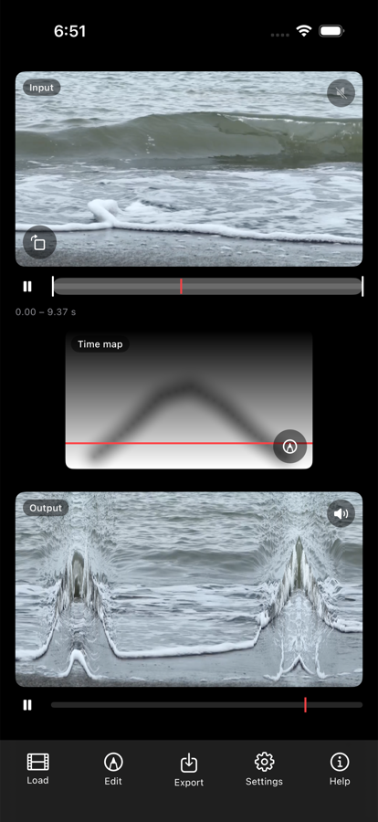

Time Flow Sketch
映像の中の時間の流れを、絵を描く感覚で操作する iPhone / iPad アプリ
このアプリについて
読み込んだ動画に対して、白黒の濃淡で「時間の流れの形」を描きます。 描いた明るさがそのまま時間の位置や再生の速さになり、画面の場所ごとに違う時間が流れはじめます。
指でなぞったところだけが先に進む。別の場所は逆再生になる。 ある部分だけ時間が止まったまま、まわりだけが動いていく。 ふだん一様に流れている映像の時間を、ばらばらに解きほぐして組み立て直すことができます。
基本の使い方

1. 画面の見かた
トップ画面は上から 入力映像・マップ画像・出力映像 の3段です。 同じ素材が、マップによってどう変わったかをその場で見比べられます。
それぞれの映像の下に再生バーがあります。右上のスピーカーで音を切り替えます。 入力は素材そのままの音、出力は時間操作を受けた音で、鳴るのはどちらか一方だけです。
最初は画面下の「読み込み」から動画を選びます。動きのある映像ほど効果がはっきり出ます。 フル HD 以下・30 秒以下の短い素材が扱いやすく、読み込みも速く済みます。

2. マップを描く
マップ画像の右下にある鉛筆アイコン、または画面下の「編集」から編集画面に入ります。 下半分のマップの上を指や Apple Pencil でなぞると、その明るさに応じて時間の流れが変わります。
黒いところは素材の始まりのほう、白いところは終わりのほうを映します。 上の映像に結果がその場で反映されるので、描きながら確かめられます。

3. 生成やプリセットから始める
右上のアイコンから、マップの作り方を切り替えられます。 グラデーション生成は規則的な縞模様を、 モーションから生成は映像自身の動きからマップを作ります。
プリセットで塗り直しでは、一色やグラデーションでマップ全体を塗り替えます。 各ボタンの下に、いまの設定でどう再生されるか（通常再生・逆再生・時間停止など）が表示されます。
生成したマップの上から、そのまま描き足すこともできます。
4. 書き出す
画面下の「書き出し」から、結果を動画として写真ライブラリへ保存します。
適用モード
| サーフェス | 画素ごとに時刻をずらします。描いた形がそのまま時間のゆがみになる、いちばん直感的なモードです。 |
|---|---|
| 縦スリット | 画面の縦の帯ごとに違う時刻を割り当てます。マップの縦方向が出力の時間、横方向が画面の位置に対応します。 |
| 横スリット | 縦スリットの向きを入れ替えたものです。 |
| レート | 明るさを再生の速さとして扱います。逆再生から早送りまで、場所ごとに変えられます。 |
| 空間マップ | 明るさを「画面のどこから映像を取ってくるか」として扱います。時間マップと組み合わせて使う補助的なモードです。 |
編集画面の左上にある「時間マップ・縦スリット」の表示をタップすると、 マップの種類と適用モードをまとめて切り替えられます。
よくある質問
動画の読み込みに時間がかかります
4K や長い動画は、写真ライブラリからの取り出しに数十秒かかることがあります。 短く切り出した素材のほうが試行錯誤しやすくなります。
アプリが途中で終了します
読み込んだ動画は端末のメモリに展開されます。 設定画面の「映像の品質」で解像度や常駐フレーム数を下げると改善します。 他のアプリを終了してからお試しください。
書き出した動画が見つかりません
書き出しに成功すると写真ライブラリに保存されます。 保存の許可を求めるダイアログで「許可しない」を選んだ場合は、 iOS の「設定」→「Time Flow」→「写真」から変更できます。
音はどこから鳴っていますか
映像の右上にあるスピーカーで切り替えます。 出力を選ぶと、読み込んだ動画の音声が映像と同じ時間操作を受けて鳴ります。 入力を選ぶと、素材そのままの音が等速で鳴ります。 鳴るのはどちらか一方だけで、同時には鳴りません。音声を持たない動画では無音になります。
外部ディスプレイにつなげますか
つなげます。HDMI や AirPlay でディスプレイに接続すると、 出力映像だけがそちらに全画面で表示されます。手元の画面は編集画面のまま使えるので、 大きな画面で結果を見ながら描けます。展示や上映にも使えます。
iPad でステージマネージャがオンになっていると外部ディスプレイが拡張デスクトップとして扱われ、 この表示にならないことがあります。その場合は「設定」→「マルチタスクとジェスチャ」から ステージマネージャをオフにしてください。
iPad でも使えますか
使えます。iPhone と iPad の両方に対応しています。 画面の広い iPad では映像とマップを同時に大きく表示でき、Apple Pencil なら筆圧も使えます。
どんな映像が向いていますか
波、歩く人、車、風にゆれる布など、動きが続いているものがよく合います。 カメラは固定したほうが効果が分かりやすく、手持ちで画面全体が動くと効果が埋もれます。 スーパースローで撮った映像はとくに向いていて、時間を大きく引き伸ばしても 動きが飛ばずになめらかなまま残ります。
お問い合わせ
不具合の報告や機能のご要望は下記までお寄せください。
ryu.furusawa@gmail.com
https://ryufurusawa.com/contact
Time Flow Sketch
Reshape the flow of time inside a video by drawing. For iPhone and iPad.
About
Time Flow Sketch is a sketching app for reshaping the way time flows inside a video. Load a clip and the app expands it frame by frame into memory on the GPU, so the whole thing is available at once rather than one moment at a time. Out of that block of stacked frames it assembles a new video in which different parts of the picture sit at different points in the clip — column by column (Vertical slit), row by row (Horizontal slit), or pixel by pixel (Surface). A wave can break on the left of the frame while the right side has not started moving yet; a walking figure can trail a wake of its own earlier selves.
What decides all of that is a picture. The instruction medium is a grayscale image — the map — which you make with Draw, Gradient, Presets, or From motion. Its brightness is read as a number, and what the number means depends on which kind of map you are editing. In a Time map, brightness is a moment in the clip: black is near the start, white near the end. In a Rate map, brightness is a playback speed: with the default range, black is frozen, mid grey is normal playback, and white is double speed. In the optional Space map, brightness is a position — which part of the frame to take the image from. Maps are handled as 16-bit grayscale, so a smooth tonal gradient really does become a smooth change in time rather than a staircase of visible steps.
This is the part ordinary editing cannot reach. In a normal editor, speed is a property of a whole clip and varies along the timeline: you set one value — 50%, reverse, freeze — and the entire frame obeys it. Here the instruction is spatial instead. A map carries a separate value for every pixel, so a single output frame can be assembled from the beginning, the middle and the end of your footage at the same time, and the borders between them are wherever your brush went. There are no keyframes to manage: the shape of the stroke is the shape of the distortion in time, and the result updates live while you draw, so you work by eye rather than by numbers.
Everything happens on the device. This build makes no network connections at all — there is no sign-in, no account, no in-app purchase, no analytics, and nothing is uploaded or collected. Your photo library is touched exactly twice: once to read the video you load, once to save the video you export. Rendering is local, on the device’s own GPU, which is also why long or high-resolution clips are demanding — every frame has to fit in memory at the working resolution you choose under Settings.
The app runs on iPhone and iPad, and it is localized: on a device not set to Japanese the controls, menus and captions are in English, matching the names used on this page. On iPad the extra room shows the video and the map at a workable size at once, and Apple Pencil adds pressure sensitivity, with a double-tap on the side of the Pencil to show or hide the brush palette. Connect an external display over HDMI or AirPlay and the finished result fills that screen by itself while your device keeps the editor — which is what makes the app usable for installation and live work as well as for producing files.
Getting started

1. Reading the main screen
With landscape footage the screen stacks Input (your clip, untouched), the map, and Output (the result, playing live) from top to bottom; with portrait footage Input and Output sit side by side and the map goes below them.
Each video has its own playback bar. The one under Input also sets the clip range: drag the white handle at either end to trim it, touch inside the pale band to move the playhead, or press and hold and then drag to slide the whole range without changing its length. The seconds in use are printed underneath.
A speaker button sits at the top right of each video, and only one of the two sounds at a time. A rotate button sits at the bottom left of the Input tile: each tap turns the source another 90° and re-imports the clip, which takes as long as a reload but leaves your maps alone.
The map tile is labelled with which map it is and carries a red playhead marking the row or column being read at that instant. Drag anywhere on the map to scrub straight there; playback pauses while your finger is down and resumes when you lift. The editor opens three ways: the pencil icon at the bottom right of the map, a tap on the map or on the Output video, or Edit on the bottom bar — which also holds Load, Export, Settings and Help, with Edit and Export dimmed until a video is loaded.
2. Loading a video
Tap Load and pick a clip from your photo library; the same button swaps in a different clip later. The first time, a note recommends HD (1280×720) or below and under 30 seconds. Every frame is converted on device at import, so lighter footage both loads faster and stays responsive while you draw. The overlay names the stage it has reached — Fetching from your photo library…, then Expanding frames… with a percentage and Converting and uploading to the GPU underneath it, then Loading the audio track… — and Cancel stops it at any point. Footage with continuous movement shows the effect most clearly.
When loading finishes, Output looks exactly like Input. That is correct: the starting map for every mode is the pattern that gives back ordinary playback. The two pictures only diverge once you draw or generate.

3. Drawing or generating a map
The editor opens full screen. The row across the top carries the map-and-mode label at the left, the gear (Parameters), the waveform (Sound), the layout menu, the method menu, and an X at the far right that closes the editor. Nothing needs saving — the map is already applied.
Trace the map with a finger or Apple Pencil. The brush button opens a palette holding the Bleed brush toggle, Fill, five tones — Black, Dark grey, Grey, Light grey, White — and Smudge. Brush size runs 1–300 px, with Strength, Gamma and Blur alongside.
The caption under the map spells out what brightness means with your current settings — “Black is the start of the clip ⁄ white the end” — and rewrites itself when you change the map or the mode. The icon at the top right switches from Draw to Gradient, Presets or From motion. Anything you generate can be drawn on afterwards.
4. Exporting your first result
Tap Export. Exactly what the Output view is showing is written out as an H.264 .mp4 with its audio and saved to your photo library, with a progress bar over the output while it works — leave the app open until it finishes. The length comes from the map’s dimensions and the Duration slider in the editor’s Parameters panel (the gear icon). Settings shows the resulting Export length next to Frame rate under Export, while Include audio and Also save the map as a 16-bit PNG sit under Export options. The video is exported at the working resolution chosen at import. If you declined the Photos permission, a share sheet opens instead.
Maps and modes
Two separate choices decide what a grayscale image does to your footage: the kind of map — what brightness is taken to mean — and the mode — how the map is laid over the picture. Both live behind one label at the top left of the editor, which reads something like Time map · Vertical slit. Tap it and a menu opens whose top section is headed Map (Time map, Rate map, Space map (optional)) and whose lower section is headed Modes — or Mode (space uses slits only) when a space map is what you are editing.
The app stores a separate image for each kind. Switching from Time map to Rate map recalls whatever is sitting in that slot instead of reinterpreting what you just drew, so the switch never overwrites your work. Maps are held as 16-bit grayscale — 65,536 levels — which is why a gentle gradient produces a genuinely gentle change in time rather than visible steps.
Time map — brightness is a moment
Black points at the beginning of the clip, white at the end, and every grey in between is a moment in between. The caption under the map in the editor always states the current reading: “Black is the start of the clip ⁄ white the end.”
In the slit modes, Time from and Time to in the Parameters panel (the gear icon) narrow the span the two ends of the scale point at. These are the same two values as the white handles on the playback bar under the input video, so moving either one moves the other. Once you narrow the range, the caption switches to real seconds — “Black 2.0s into the clip ⁄ white 6.5s” — and Reload this range at higher detail re-imports just that span, giving you more frames to work with inside it.
In Surface mode a time map means something different: a relative shift rather than an absolute position. Shift (s), 2 seconds by default, is the total spread. Black runs half of it earlier than the current moment, mid grey is unchanged, white half of it later, and time wraps — a pixel pushed past the end of the clip reappears at the beginning.
The default time map is whichever pattern gives back ordinary playback: a Top → bottom ramp under a vertical slit, Left → right under a horizontal one, and All grey under Surface. Reach for a time map when you want particular places in the frame pinned to particular moments — this half of the picture in the past, that half in the present.
Rate map — brightness is a speed
Here brightness sets how fast time runs, not where it is. In the slit modes the app accumulates that speed along the output time axis, so the moment shown at any point is the sum of everything before it: change one band high in a vertical-slit map and everything below it moves too.
Speed is 1 + (brightness × 2 − 1) × Rate range. With the default Rate range of 1.0 that makes black a hard freeze, mid grey ordinary playback, and white 2.0× fast; push Rate range to 3 and black becomes 2.0× reverse while white becomes 4.0×. The solid presets report the resulting speed in words, and the four ramps report both ends at once using the shortened forms — Frozen, Normal, Slow, Fast, Reverse, Slow reverse, Fast reverse. Start point chooses where in the clip the accumulation begins. If the resulting path would run off either end of the source, the app slides the whole path back inside the clip, and compresses it only when sliding is not enough — so the result never simply sticks against the first or last frame.
In Surface mode every pixel becomes an independent clock. Black rate and White rate (−4 to +4, default −1 and +1) are interpolated by brightness, so out of the box black runs backwards at normal speed, white runs forwards, and mid grey is frozen. Anchor — Start, Middle, or End, Middle by default — is the instant in the output at which every pixel agrees, and Anchor at picks which point of the source they agree on.
The default rate map is All grey in every mode. Under a slit that is plain normal playback; under Surface it is completely frozen, because grey sits halfway between −1 and +1. If you switch to a rate map in Surface mode and nothing moves at all, that is why — paint away from grey. Reach for a rate map when the interesting question is how fast a region moves rather than which frame it shows: one corner crawling, another racing, a third running backwards.
Space map — brightness is a place
The space map is optional, and it bends space rather than time: brightness says where in the frame to take the picture from. It is applied on top of whichever map — time or rate — is currently driving the warp, never instead of it.
It is always applied slit-wise. Surface disappears from the mode picker while the space map is the thing you are editing, and if the time side is set to Surface the space map behaves as a vertical slit. Under a vertical slit, black is the left edge of the source and white the right; under a horizontal slit, black is the top and white the bottom.
Its defaults are the identity ramps — Left → right for a vertical slit, Top → bottom for a horizontal one — which is exactly why ignoring the space map changes nothing. Repaint it All grey and every column shows the same column of the source, smearing one slit across the whole frame; Right → left mirrors the picture; a ramp running along the time axis is labelled Slit scan. Once you have edited it, a Space map in use button appears on the main screen and its thumbnail sits beside the time map.
The three modes
| Vertical slit | The map’s vertical axis is output time and its horizontal axis is position across the frame. Each output column takes its moment from one column of the map, read at the height the playhead has reached — the red line drawn across the map on the main screen. Slit modes take the nearest source frame rather than blending two, which keeps thinned-out frames from ghosting together. |
|---|---|
| Horizontal slit | The same idea with the axes swapped: the map’s horizontal axis is output time, its vertical axis is position down the frame, and the red line sweeps left to right. |
| Surface | No time axis at all. The map lies directly over the picture and every pixel is shifted in time independently, the whole image at once, on every output frame. The shape you draw becomes the distortion in time directly, which makes it the easiest mode to read. Surface blends between neighbouring frames rather than snapping to the nearest one, so motion stays smooth. |
Kind and mode are independent, so there are eight useful combinations — nine minus space-plus-surface, which does not exist. The same drawing behaves completely differently across them: a Top → bottom ramp is ordinary playback under a vertical slit, a still frame with a different moment in every row under a horizontal one, and a smooth top-to-bottom time ramp under Surface. Because of that, changing the mode rebuilds any map you have not edited into the new mode’s normal-playback default; maps you have drawn on are left exactly as they are. Loading a different video rebuilds all three, edited or not, at the new clip’s aspect ratio.
One consequence catches people out. In the slit modes the map’s size along its time axis — height for a vertical slit, width for a horizontal one — is the duration of the result, so a map built for a 16:9 clip gives roughly a 17-second output under a vertical slit and a 30-second one under a horizontal slit: same footage, same drawing, same settings otherwise. The length of the clip you loaded has nothing to do with it. The numbers, and the controls that change them, are under Settings → Map resolution (time detail).
Building a map
The round icon at the top right of the editor chooses how you build the map. There are four methods — Draw, Gradient, Presets and From motion — and switching between them changes only the row of tools along the bottom. The map you are editing, the mode it is applied in, and the live preview all stay as they were. The caption just above the tools always states what black, grey and white mean for the current map and mode, so it is worth reading again after any change of mode or parameter.
Every method’s tool row begins with a play/pause button and ends with a counter-clockwise reset arrow that returns the map to the current mode’s default; Gradient and From motion also carry a clockwise refresh button that re-runs the generation. Outside Draw, a drag on the preview scrubs the playhead.
The layout menu, next to the method menu at the top right, has four options. Side by side is the default and shows the video and the map as two panes. Overlay lays the map over the picture at partial opacity, which is how you land a stroke on a particular object rather than a particular part of the frame. Map only and Video only show one layer at a time. The choice is independent of what an external display is showing — that always shows the output alone.
Draw
Trace over the map with a finger or Apple Pencil. A stroke does not replace the tone underneath; it eases every pixel under the brush towards the tone you picked, most strongly at the centre of the brush and fading to nothing at its edge. Tone therefore builds up over repeated passes and never overshoots the target, which is what makes soft shading possible.
There is no undo. Nothing in the app takes a stroke back. A stroke can only be painted out — pick the tone that was there before and work at low Strength until it is gone — or the whole map reset with the counter-clockwise arrow at the end of the tool row, which costs you the entire drawing. There is no separate eraser either; painting with White pulls the map back to white. This is also why Gamma, Blur and invert are built to stay reversible until you commit them, below.
Smudge works differently from the tones — it picks up the tone already under the brush and drags it along the direction of travel, blending as it goes, which is the quickest way to soften a boundary you have already drawn. Fill expands into the seven preset patterns and repaints the entire canvas with one of them without leaving Draw.
| Brush | 1–300 px. This is the radius, measured in map pixels rather than screen pixels, so on a default map (512 px on the short edge) a brush of 300 covers the whole frame at once. The slider is deliberately non-linear — size follows the square of the slider position — so the first half of its travel covers everything up to about 75 px, and the default of 80 sits near the middle. |
|---|---|
| Strength | 0.05–1, default 0.3. How far a single pass moves towards the chosen tone. Low values let you build up tone gradually; at 1 a single stroke lands almost the full tone at the centre of the brush. |
| Gamma | 0.3–3. Bends the tonal curve of the whole map, pushing the mid tones darker or lighter while black and white stay put. |
| Blur | 0–10. Softens the whole map. The scale is exponential, reaching a radius of well over a hundred pixels at the top, so the useful range for gentle smoothing is the bottom third. |
Gamma, Blur and the invert button are non-destructive with respect to your strokes. They are a live adjustment applied on top of the raw canvas — blur first, then gamma, then invert — and they keep tracking whatever you paint afterwards. The map the app renders, plays and exports already includes them; what stays untouched is the drawing underneath, so while you are on that map, dragging the three controls back to neutral restores the raw strokes exactly. Move any of them off neutral and a button appears reading Apply adjustments (overwrites the map). Tapping it bakes the adjustment into the drawing canvas and returns the three controls to neutral, so the blurred or inverted result becomes the new base and you can paint fresh strokes on top of it at full contrast. That step is one-way — there is no undo for it either — so audition first and apply once you are sure.
With Apple Pencil, pressure scales the brush. A finger always counts as an average press, so a Pencil can go both thinner than a finger stroke (a light touch narrows the brush to roughly a sixth of the set size) and thicker (hard pressure widens it to about one and a half times). The Bleed brush exists for the finger case: turn it on, hold still, and the app keeps laying down tone at that point every display frame while the affected radius grows — about three times the brush size after four seconds or so. Each deposit is very light, so the result is a soft pool of tone spreading outward rather than a hard dot. Double-tapping the side of an Apple Pencil opens and closes the palette, so you can change tone without reaching for the toolbar.
Playback pauses automatically the moment a stroke begins and resumes when you lift, so the device is not rendering video and computing brush strokes at the same time. That is what keeps the line following your finger.
Gradient
Choosing Gradient immediately lays a regular wave over the current map, and every slider regenerates it live as you drag. The pattern is a sine wave: brightness runs smoothly from black to white and back, measured along a direction you choose.
| Amplitude | 0–1. How far the wave swings. At 1 it reaches full black and full white; at 0 the map is flat grey and only Offset has any effect. |
|---|---|
| Period | 8–1024 px. The length of one complete cycle, in map pixels. Short periods give a striped, stuttering result; long ones a single slow ramp. |
| Angle (°) | 0–360. The direction the wave travels. 0° runs it top to bottom, producing horizontal bands; 90° runs it left to right, producing vertical bands; anything between gives diagonals. |
| Phase (°) | 0–360. Slides the pattern along its own direction without changing its shape. Use it to move where the black and white bands fall relative to the subject. |
| Offset | −0.5 to +0.5. Shifts the centre level of the wave away from mid grey, biasing the whole map dark or light. A small amplitude combined with an offset gives a gentle ripple around one chosen moment instead of a full sweep through the clip. |
The grid button offers five quick patterns — Vertical stripes (90°), Horizontal stripes (0°), Diagonal (45°), Fine stripes and Gentle waves. The first three set both period and angle; the last two change only the period and keep the angle you are already using. What a gradient does depends entirely on the mode: on a time map in vertical slit, a wave running down the frame makes the clip run forwards, then backwards, then forwards again, once per cycle, while the same wave running across the frame instead freezes each column at a different moment.

Presets
Seven buttons repaint the whole map in one tap: All black, All grey, All white, Top → bottom, Bottom → top, Left → right and Right → left.
Each button carries a thumbnail of the pattern, its name, and — most usefully — a line underneath saying what that pattern will actually do given the map kind, the mode, and the parameters you have set. Those labels are computed rather than fixed, so they change the moment you change anything that matters.
On a time map in vertical slit, where the map’s vertical axis is output time, they read like this:
| All black | Frozen at start |
|---|---|
| All grey | Frozen mid-clip |
| All white | Frozen at end |
| Top → bottom | Normal playback — the ramp runs along the time axis, in the forward direction |
| Bottom → top | Reverse |
| Left → right | Left is earlier — this ramp runs across the frame instead, so each column freezes at a different moment |
| Right → left | Right is earlier |
Switch the same map to horizontal slit and the two groups trade places, because the time axis is now horizontal: Left → right becomes Normal playback and Top → bottom becomes “Top is earlier”. On a surface time map, where brightness shifts each pixel a little either side of now, the three solid tones report the offset in seconds taken from Shift (s) — with Shift at 3 seconds they read “1.5s earlier”, Normal playback and “1.5s later” — while all four ramps read simply “Time ramp”.
On a rate map the labels are driven by Rate range in the Parameters panel, which sets what black and white mean. With the range at 1.0, black is frozen and white is double speed, so All white reads “2.0× fast”; widen the range to 1.5 and black passes through zero into reverse, so All black now reads “Slow reverse”. The four ramps show both ends at once — joined by an arrow when the ramp runs along the time axis, or by a wave dash when it runs across the frame, since in that case the two speeds coexist in different parts of the picture rather than following one another.
From motion
This builds the map out of the footage itself. On selecting it, the app walks the whole clip once on the GPU, accumulating how much each pixel’s brightness changes from frame to frame; busy areas come out light, still areas dark. The result of that pass is cached for the loaded clip, so every slider afterwards responds instantly.
The clock button toggles between the two states the caption names, Still and History. In Still, the bar-chart button switches what is accumulated, which the same caption reports: average favours sustained motion, so something that moved throughout the clip outweighs a single event, while maximum catches anything that moved at all, even for one frame, which is better for isolating a single gesture or a passing object. The map is then normalised between its 1st and 99th percentile, so one bright flash or a cut cannot flatten everything else into grey. Gamma and Blur shape the result and the invert button flips it, making motion dark instead of light. Unlike in Draw these are part of the generation itself, so there is nothing to apply — the map is rebuilt each time you move a slider.
History is a different kind of map altogether. Instead of one image summarising the whole clip, the app builds one map per frame from a decaying accumulator: each frame adds the new movement and fades what came before. Trail (s) (0.5–10, default 3) sets how long that fade takes. The result is a map that moves — a bright trail appears where something passes and dims over the next few seconds, so the time warp itself shifts continuously as the clip plays instead of standing still. The map thumbnail updates as you watch, and consecutive frames of the map are cross-faded, so even a clip whose frames were thinned at import changes smoothly rather than stepping.
Two limits are worth knowing. History applies to time and rate maps only — the button is hidden while you are editing a space map, which always uses the still analysis. And the per-frame data is held at reduced resolution (at least half, and further reduced for long clips, to stay inside a fixed memory budget), so a history map is softer than a still one. Applying any fixed image afterwards — a preset, a gradient, a reset, or switching to Draw — stops the moving map and leaves the state it had reached behind as an ordinary still map.
Combining the four
The four methods are not symmetrical. Anything generated can be drawn over: entering Draw seeds its canvas from whatever the map currently holds, so a gradient, a preset or a motion map becomes the base and your strokes add to it. The reverse does not hold — choosing Gradient or From motion after drawing rebuilds the map from scratch and discards the strokes, with no undo to get them back. If a drawing is worth keeping, export it first: see Also save the map as a 16-bit PNG.
Sound
If the clip you loaded carries an audio track, that audio is put through the same time manipulation as the picture. The frame is divided into a grid, and each cell sounds according to how time is running in that part of the image — a region running backwards plays backwards, a region racing ahead climbs in pitch. Nothing is synthesised from scratch: every sound you hear is the clip’s own recording, read at a different place and a different speed for each cell.
The two speaker buttons
A speaker button sits at the top right of each video. The one over the input turns on Source audio; the one over the output turns on Result audio. Only one of the two plays at a time — switching on either switches the other off, since both are built from the same recording and layering them only doubles it.
- Result audio is already on when a clip with an audio track finishes loading, set to Rate playback. That is the grid synthesis described below. Switch it off and on again and it returns to whichever method you used last.
- Source audio is off until you turn it on. It plays the material untouched at normal speed, looping the clip range you set with the white handles on the bar under the input, and turning it on switches the result audio off. While it is on, the input picture takes its playhead from the audio rather than from its own timer, so the two cannot drift apart.
- Both buttons are dimmed and inert when the clip has no audio track.
What the result audio is doing
For every output frame the app evaluates the same map arithmetic the picture uses, but on the CPU and averaged over each cell of the grid. That gives each cell one position in the recording — 0 is the start of the clip, 1 the end. Comparing that position with the previous frame’s gives the cell its playback rate, clamped to a range of ±4× so that an extreme map cannot run away. Each cell is then a voice: one reader moving through the recording at that position and that rate.
- A cell’s column sets its stereo position, from hard left in the leftmost column to hard right in the rightmost. Rows are not panned, so the stereo image is a map of the frame from left to right and you can hear where in the picture a change is happening.
- In Vertical slit and Horizontal slit, cell positions are read from the row or column of the map the red line is currently crossing, so the sound changes as the scan advances through the map.
- In Surface, every cell advances together but offset by the average brightness of its own region, so the whole frame moves through the clip in a shape rather than a line.
Granular and Rate playback
Open the Sound panel with the waveform icon at the top of the editor. The segmented control at the top of it chooses Off, Granular, or Rate playback — the same two methods the output speaker toggles between. Both read the recording at the cell’s rate, so in both of them speed shows up as pitch; what differs is how often a voice is pulled back to where the picture says it should be.
| Granular | Each voice plays two overlapping grains under a raised-cosine window, and each grain is re-seeded to the cell’s current position every Grain (ms). A granular voice therefore re-articulates constantly and can never drift away from the picture, which is what keeps it locked to a fast-moving map. Grain (ms) runs 20–200 and is only shown for this method: short grains track fast changes crisply but sound grainier; long grains are smoother but smear detail. |
|---|---|
| Rate playback | Each voice reads the recording as one continuous stream, like tape, so half speed is an octave down, double speed an octave up, and negative rates run the recording backwards. It only jumps back to the picture’s position when it has drifted more than about a third of a second, and does so behind a short fade rather than a click. A cell held at a dead stop goes silent, because nothing is moving past the head. |
Granular suits maps that change quickly and material whose identity matters — speech, music, a single recognisable sound — because the constant re-seeding keeps every cell pinned to the moment its part of the frame is showing. Rate playback suits material read as texture — water, traffic, wind, a crowd — and is the clearest way to hear what a rate map is doing, since the speed of each region arrives as pitch, uninterrupted.
Reverb
Reverb is off until you turn it on, and it is not a fixed room. The wet amount follows the spread of time across the frame: the app measures the gap between the earliest and the latest cell in the current frame and drives the reverb from it. A flat map, where the whole frame sits at the same moment, stays dry. A map that scatters the frame across the clip opens the reverb up, reaching full depth once the spread is around half the clip’s length. The value is smoothed, so the tail swells and recedes with the map instead of jumping. Depth sets the ceiling that spread can reach; the tail itself is a fixed two and a half seconds behind a short pre-delay. In practice this means scattered time is heard as space.
Voices, and what they cost
Voices chooses how finely the frame is divided: 3×3 (9), 5×3 (15), 7×5 (35, the default) or 9×7 (63). More voices resolve the map more finely and, because stereo comes from the columns, give a wider and more detailed stereo image. Fewer voices average a larger area into each cell, which sounds broader and blunter.
Every voice is synthesised sample by sample on the audio thread while the GPU is warping the picture, so 63 voices cost roughly seven times what 9 do. If the audio starts crackling or dropping out, or the preview stutters after you raise the count, step back down — the setting is free to change at any time. The summed voices are soft-clipped before output, so a loud map compresses rather than tears, but pull Volume down rather than leaning on that.
| Volume | Level of the result audio, 0 to 1. |
|---|---|
| Grain (ms) | Grain length, 20–200 ms, default 85. Granular only. |
| Stereo width | 0 places every voice in the centre; 1 spreads them fully left to right. |
| Reverb | The switch, and Depth — the ceiling the spread of time can drive it to. |
| Voices | Grid division: 9, 15, 35 or 63 cells. |
| Export audio | Include audio in the export — whether the exported file carries a soundtrack. The same switch appears as Include audio under Settings → Export options. |
In the exported file
These settings carry through to the export. The export does not record what your speakers played; it runs the same synthesis offline, frame by frame, against the same cell positions, so the file matches what you heard in the preview — method, grain length, stereo width, reverb, voice count and volume included.
Two things will give you a silent file. If Result audio is off when you export, nothing is written. And because turning on Source audio switches the result off, exporting while you are monitoring the untouched material also produces silence. Turn the output speaker back on before you export.
If you hear nothing
- The clip has no audio track. The panel says so, and the speaker buttons stay dimmed. Clips rendered out of editing apps often arrive without one.
- The audio was skipped at import. Loading the audio track is the last stage of loading a video. Cancel during it and the app tells you it has the video but not the sound; load the clip again to get the audio.
- Rate playback on a frozen map. A cell at a dead stop has nothing moving past the head. Switch to Granular, which keeps re-articulating, or paint the map away from a hard freeze.
- Volume is at zero, or the method is set to Off. Both leave the picture running normally.
- The app plays through the playback audio category, so it sounds even with the ring/silent switch set to silent. If your device is otherwise quiet, that is not the cause.
Exporting and quality
Export, on the bar at the bottom of the screen, renders exactly what the output view is showing and writes it as an H.264 .mp4, which is then saved to your photo library. The render is not a copy of the preview: the app walks the output from beginning to end one frame at a time and draws each frame at full quality, so it takes longer than the piece is long. Playback stops while it runs, a progress bar reads Exporting…, and the button stays disabled until it finishes. Keep the app open while it runs; a longer piece takes proportionally longer.
When it is done the app confirms that the file went to your photo library. If you declined the photo library permission the work is not lost: a share sheet opens with the finished file instead, so you can send it to Files, AirDrop it, or hand it to another app. The same happens if the save itself fails.
Sound is written into the same file as stereo AAC, and it is the manipulated sound — the grains or rates are recomputed offline against the same per-cell times the picture uses, so the export matches what you heard in the preview rather than the original audio. Turn it off with Include audio in the export, in the editor’s sound panel or as Include audio under Export options in Settings. Muting the output, or setting the sound method to Off, also leaves the file silent.
How long the export will be
You never type the length in. It is a base length that the current mode works out for itself, multiplied by the Duration slider in the editor’s Parameters panel (the gear icon). The slider runs from ¼× to 4× and shows the result in seconds next to it; Settings also reports it as Export length.
| Vertical slit | The map’s height in pixels, read as 30 px per second and clamped to 2–120 seconds. |
|---|---|
| Horizontal slit | The same, but from the map’s width — the time axis is horizontal in this mode. |
| Surface, time | The length of the loaded clip. |
| Surface, rate | A flat 30 seconds. |
So in the slit modes the shape of the map is the shape of the time: a tall map is a long, slow video, a wide map a short one with finer detail across the frame. Changing the map’s dimensions is the honest way to change the length, and the controls for that live under Settings → Map resolution (time detail). Stretching the Duration slider instead is perfectly usable, but understand what it does: above 1× the map is resampled between its own pixels, so the steps in time get softer the further you push it.
Frame rate (Settings → Export) is 24, 30 or 60 fps. It changes how many frames are written and how long the render takes, not how long the result plays.
Resolution, and why it is not your camera’s
The export comes out at the size of the working copy held in memory, not the size of the file you picked. That size is fixed at import by Resolution (long edge) in Settings → Video quality: 540p, 720p, 1080p or 1440p. The aspect ratio and any rotation follow the source, and the app never scales up — a 480p clip stays 480p however high you set the long edge. The bit rate scales with the frame area — about 11 Mbps for 1280×720, and never less than 6 Mbps — so compression is rarely what you are seeing; the working resolution is.
Changing Resolution (long edge) or Frames in memory does nothing to the video already loaded. Tap Reload with these settings to re-import on the spot; the preview and the export both pick it up. Otherwise the change waits for the next clip you load. Note what the second setting costs: frames in memory is the time resolution of the whole piece, and Estimated memory tells you what the combination will ask of the device before you commit to it.
The clip range is part of the export
The white handles on the bar under the input video decide which part of the source the render draws from, and the range is shown in seconds underneath. It applies in every mode, not only the slit modes — the editor’s Time from and Time to sliders are the same two numbers. Until you touch a handle the range fits itself to the output length so the material plays at roughly natural speed; once you move one, it stays where you put it. Press and hold the band and drag to slide the whole range without changing its length.
Before a final export in a slit mode with a time map, it is worth tapping Reload this range at higher detail in the same Parameters panel. It re-imports only the seconds between the handles, which spends the same frame budget on less material and gives the time axis more to interpolate between. The button is built only for that combination — on a rate map or in Surface it is not there, and a reload from Settings brings in the whole clip.
Also save the map as a 16-bit PNG
This toggle, under Export options in Settings, makes the export produce a second thing: a
share sheet containing the maps as single-channel 16-bit grayscale PNGs. The time or rate map
is always written; the space map comes too, but only if you have actually edited it. The filename carries the
map’s role — time_0-512, rate_1.0 or space_912 — which
is what the desktop version reads them back by. For a time map that number is the map’s height in pixels,
which is the time-axis length in Vertical slit. The files are written to a temporary folder rather than your
photo library, so dismiss the share sheet without saving and they are gone.
The reason to keep them is quality. The .mp4 can only ever be as good as the working copy, capped at 1440p and at the number of frames the device could hold. The map is not a picture of the result, it is the instruction — brightness per pixel, 65,536 levels of it, which is why it is 16-bit and not 8-bit (at 8-bit the time axis visibly steps). A map also carries no resolution of its own: it is read as brightness from 0 to 1 and stretched over whatever frame it is applied to. So take that PNG and your original, full-resolution footage to a desktop, render there with the desktop version (imgtrans), which reads these files as they are named, and you get the same time design at the full quality of the original. Sketch on the device, finish on the desktop.
Sustained exporting warms the device and drains the battery. For a long piece, plug in first.
Settings
Settings is the fourth button on the bottom bar. It opens as a sheet over the main screen; Done at the top right closes it. There is nothing to save — every control takes effect the moment you change it, with two deliberate exceptions: the video quality settings and the map dimensions, each of which has its own button.
Video quality
This section decides how the imported video is held in memory, and it is the section to reach for when the app runs out of memory or feels slow.
| Resolution | Resolution (long edge) — 540p / 720p / 1080p / 1440p. The long edge of the working copy the app decodes to; the file in your photo library is never modified. This is also the resolution the export is written at, so 1080p footage imported at 720p exports at 720p. |
|---|---|
| Frames | Frames in memory — 300 / 450 / 900 / 1800. The maximum number of frames kept. A clip with more frames than this is thinned evenly across the loaded range — every second frame, every third, and so on — which lowers its effective frame rate. |
| Memory | Estimated memory — a read-out, not a control: resolution × frames × 4 bytes per pixel, computed for a 16:9 frame. Square or portrait footage at the same long edge costs more than the figure shown (a square clip roughly 1.8×). |
| Reload | Reload with these settings — re-imports the clip you already have at the current resolution and frame count. Greyed out when no video is loaded or one is still loading. |
The per-frame cost is fixed and easy to reason about, because frames are stored uncompressed:
| Long edge | Per frame | ×450 frames | ×1800 frames |
|---|---|---|---|
| 540p | 0.63 MB | about 280 MB | about 1.1 GB |
| 720p | 1.11 MB | about 500 MB | about 2.0 GB |
| 1080p | 2.5 MB | about 1.1 GB | about 4.4 GB |
| 1440p | 4.45 MB | about 2.0 GB | about 7.8 GB |
The default is 720p and 450 frames, about 500 MB. The bottom-right corner of that table is the usual cause of an app that quits while loading; iOS gives an app a fraction of installed RAM, and several gigabytes is past it on most devices.
The two settings buy different things. Resolution buys detail within a frame, and costs memory in proportion to area — going from 720p to 1440p is four times the memory, not twice. Frames in memory buys resolution in time, and matters most in the slit modes: there the renderer samples the nearest stored frame with no blending, exactly as the desktop version does, so if a 60-second clip has been thinned to 450 frames the slit output steps visibly. Surface mode blends between the two nearest frames instead, and tolerates thinning much better. If your output stutters rather than flows, raise frames before you raise resolution.
Changes here do not reach the clip already loaded. Until you act, they apply only to the next video you import. When the loaded copy no longer matches, an orange line appears — The current video has not been reloaded with these settings yet — and Reload with these settings re-imports on the spot, updating the preview and the export together. One caveat: that warning compares resolution only. Change the frame count alone and no warning appears, but a reload is still needed for it to take effect.
Reloading keeps your work. The maps are untouched, because the app only rebuilds maps when you load a different video. The audio track is extracted again, and the clip-range handles are re-fitted to the material now in memory rather than left where you put them.
There is a second, more interesting use for that button. In a slit mode with a time map, the reload imports only the clip range set by the white handles, not the whole file, and packs the same number of frames into that shorter span. Trim to three seconds of a thirty-second clip, reload, and the frames in memory are ten times denser in time — the same trick the desktop renderer uses. The editor offers the identical action as Reload this range at higher detail under the time sliders.
Export
| Frame rate | 24 / 30 / 60 fps. The frame rate written into the exported file. |
|---|---|
| Export length | A read-out of the current output length in seconds, the same number shown next to Duration in the editor. |
Frame rate does not change how long the output runs; it changes how many frames are written to cover that time (length × fps). Nor does it create detail that is not there: at 60 fps the renderer still has only the frames you kept in memory to draw from, so in slit modes a high export rate on a thinned clip just repeats stored frames. Raise Frames in memory first, then the export rate. Length itself is set by the next section.
Map resolution (time detail)
The size of the map is not a cosmetic choice, and this is where the length of your export is really decided. In the slit modes the map’s time axis is the timeline of the output, one row (or column) per rendered moment, so changing its size changes how long the result runs and how finely time is subdivided.
| Map shape | Square / Portrait / Landscape. A shortcut that sets width and height to 512×512, 512×1024, or 1024×512. The selected segment is inferred from the current numbers rather than remembered. |
|---|---|
| Width | 128–2048 px, in steps of 128. The time axis in Horizontal slit. |
| Height | 128–2048 px, in steps of 128. The time axis in Vertical slit. |
| Estimate | Estimated output length — what the output would run to at these dimensions. It is an estimate because it uses the numbers in the steppers, while Export length above reports the map actually loaded; the two agree once you rebuild. |
| Rebuild | Rebuild the map at this resolution — regenerates the maps at the width and height set here. Maps you have already edited are left alone. |
| Match video | Match the source video’s aspect ratio (default) — returns the map to following the clip: short side 512, long side scaled to the video’s aspect ratio and rounded to 8 px, then rebuilt. Greyed out when no video is loaded. |
By default a map is built to match the source video’s aspect ratio with its short side at 512 px, so a 16:9 clip gets a 912×512 map. Setting a size by hand switches the map to 1:1 pixel display, and anything extending past the frame can be reached by scrolling in the editor.
In the slit modes the length works out at one pixel of the time axis per 1/30 second, before the Duration multiplier in the editor is applied (slider centre is 1×, the ends ×0.25 and ×4):
| Time axis | Base length | With Duration |
|---|---|---|
| 128 px | 4.3 s | 1.1–17 s |
| 512 px | 17.1 s | 4.3–68 s |
| 1024 px | 34.1 s | 8.5–137 s |
| 2048 px | 68.3 s | 17–273 s |
A tall map therefore gives a long, slow output; a wide, short one gives a brief, densely scanned output. That also explains the 912×512 default: about 17 seconds under a vertical slit, but about 30 under a horizontal one, because the time axis is the other side. Surface mode is the exception and ignores all of this — a time surface runs as long as the loaded clip, a rate surface runs 30 seconds, in both cases times the Duration multiplier.
Rebuilding leaves edited maps alone, which is usually what you want — it would be unpleasant to lose a drawing to a settings change — but it does mean the button can look like it did nothing. A map you have drawn on, generated, or repainted keeps its old dimensions, and presets and gradients applied later inherit those dimensions rather than the new ones. To move an edited map to a new size, reset it with the counter-clockwise arrow in the editor’s tool row: that reset rebuilds the map at the size set here, at the cost of the drawing.
One behaviour to know before you spend time on a map: loading a different video rebuilds every map, edited ones included, at a size matched to the new clip’s aspect ratio, and discards a size you set by hand. A map made for one aspect ratio does not mean anything over another. Reloading the same clip — the reload button above, or rotating the video — does not do this. If a map is worth keeping, export it as a PNG first.
Export options
| Include audio | On by default. Writes the time-manipulated audio into the exported file. Turn it off for a silent .mp4. It has no effect when the source has no audio track, or when the sound is muted or set to Off in the editor’s sound panel — those settings carry through to the export as they are. |
|---|---|
| Map PNG | Also save the map as a 16-bit PNG — off by default. Writes the map alongside the video and opens a share sheet for it: see Exporting for what the files are and why they are worth keeping. |
Current source
The last section is a read-out of what is actually in memory right now, and it is the fastest way to confirm that the settings above did what you expected.
| Loaded video | The file name. Reads No video loaded when there is none. |
|---|---|
| Size | The working copy’s pixel dimensions, after the long-edge limit and any rotation — not the dimensions of the original file. |
| Frames | How many frames are actually held. Fewer than the clip contains means it was thinned to fit Frames in memory. |
| Length | The duration those frames span. After a range reload this is the length of the range in memory, not of the whole file. |
Divide Frames by Length and you have the effective frame rate you are working at. If that number is well under the frame rate you shot at, the output will step rather than flow in the slit modes, and the fix is more frames, a shorter clip range, or both.
There is nothing else in Settings, and that is deliberate: no account, no sign-in, no sync, no analytics. Nothing is sent anywhere, so there is nothing to configure.
Getting good results
None of this is required to use the app, but it is what separates a result you keep from one you delete. Most of it comes down to giving the map something to work with.
Shoot movement, and lock the camera off
Waves, traffic, people walking, cloth in wind, foliage — continuous motion is the raw material the map redistributes, and a still subject stays still no matter what you draw. If the camera itself moves, the whole frame is already changing and the time distortion disappears into that drift. A tripod, a windowsill, or a phone propped against a cup is enough. Avoid a cut inside the trimmed range, too: brightness picks a moment in the clip, so a cut in the middle of that range turns into a hard tear across the frame.
Slow motion, with one caveat
Stretching time is a question of how many real frames there are to land on, and high-frame-rate footage has far more of them per second of action, so a map that spreads one second across the whole output has something to draw from and the movement stays continuous. Raising Frames in memory cannot invent frames that were never shot — ten seconds at 30 fps contains 300 and no more.
The caveat is that slow motion hits the frame cap first. Ten seconds at 240 fps is 2,400 frames, above even the 1800 maximum, so the importer thins it back out — at the default 450 it keeps roughly every sixth frame, leaving about 40 fps of real material. To actually get the benefit, trim to a short clip range and tap Reload this range at higher detail, or raise the frame cap, or both. Otherwise the extra frames you shot are discarded at the door.
Work small, then raise the quality once, before you export
In Settings → Video quality, 540p with 300 frames reloads in seconds and keeps drawing responsive — that is the setting to design in. When the map is right, raise Resolution (long edge) and Frames in memory, tap Reload with these settings, and export after that: the file is written at the working resolution chosen at import, so raising it later does nothing. Reloading the same clip keeps the map you drew; only loading a different video rebuilds it.
Isolate one moment with the clip range
The bar under the input has white handles at both ends and reports the range in seconds. Touching the band scrubs; a long press then a drag slides the window through the clip without changing its length, which is how you hunt for the right three seconds. With a Time map in either slit mode those values reappear as Time from and Time to in the Parameters panel, above Reload this range at higher detail, which re-imports only that span — the same frame budget packed into a fraction of the time. Three seconds of one wave breaking beats thirty seconds of the whole clip.
Smooth maps and hard edges look completely different in motion
Maps are 16-bit grayscale, so a gentle gradient becomes a gentle, banding-free drift in time, and a little Blur on a hand-drawn map is usually an improvement. A hard edge is a tear, and its direction decides what kind: in Vertical slit, where the map’s vertical axis is output time, a horizontal edge makes the whole frame jump to another moment as the playhead crosses it, while a vertical edge leaves a standing seam, one band permanently showing an earlier moment than the band beside it. Horizontal slit swaps the two. Gamma, Blur and invert stay reversible until you tap Apply adjustments (overwrites the map), so you can audition a softer version and back out.
Surface for texture, slits for subjects that travel
Surface shifts every pixel on its own and blends between neighbouring frames, so it stays soft and reads like a relief pressed into the image — right for water, fire, foliage, crowds, anything where the whole frame is busy. The slit modes give a whole column or row one single moment and sample the nearest frame with no blending, exactly as the export does, so they stay sharp and suit a subject crossing the frame: a figure walking through a Vertical slit map comes out stretched or repeated rather than blurred. On Surface a Time map is relative — mid grey unchanged, black half of Shift (s) earlier, white half later — and the shift wraps around the ends of the range, so start at a second or two, not the maximum.
Generate first, draw second — not the other way around
Presets, Gradient and From motion fill the map in one tap and give you something concrete to react to, and you can draw freely on top of anything they produce. Choosing Gradient or From motion after drawing, though, rebuilds the map from scratch and your strokes are gone, with no undo. From motion makes a good under-layer: busier areas come out brighter, so the distortion follows what is actually moving, and its History option lets the trails decay over a Trail (s) period, so the map itself changes as the clip plays.
Learn which way your gradients run
Each preset button is captioned with what it will do given your current settings — Normal playback, Reverse, Frozen at start, Left is earlier — because the same gradient means different things in different modes. In Vertical slit the map’s vertical axis is time, so Top → bottom is ordinary playback and Bottom → top is reverse, while Left → right runs across the time axis and freezes each column at a different moment. Gradients along the time axis control how the clip runs; gradients across it spread different moments over the picture.
Add a Space map when you want the sampling point to move as well
A Space map answers a different question — not when to sample but where — and it is always applied as slits, even when the time side is Surface. In Vertical slit, Left → right is the neutral setting, each output column showing the matching input column. Repaint it All grey and every column shows the same input column, smearing one strip of the source across the frame; repaint it Top → bottom and that strip sweeps across the frame as the clip plays, which is classic slit scan. Put either under a Time map that is also moving and the moment sampled and the place sampled travel independently.
Use the red line to tie the map to what you are seeing
On the main screen the map carries a red playhead: horizontal and sliding down in Vertical slit, vertical and sliding across in Horizontal slit. It marks the row or column being read at that instant, and the same red mark sits on the bar under the output, so when something odd flashes past you can see which part of the map caused it. Drag anywhere on the map to scrub straight there; playback pauses while your finger is down and resumes when you lift it. Surface shows no line, because there the whole map is in use at every instant.
Draw on the device, watch on a display
With a display connected over HDMI or AirPlay the output alone fills that screen while your device keeps the editor, and this is by far the most comfortable way to work on anything serious. Set the layout menu at the top right of the editor to Map only and the device becomes a pure drawing surface with the picture on the wall; switch to Overlay, which lays the map over the image at partial opacity, when a stroke needs to land on a particular object rather than a particular part of the frame. On iPad, turn Stage Manager off first or the display is treated as an extended desktop and the full-screen output never appears.
Keep the map, not just the video
Turn on Also save the map as a 16-bit PNG in Settings → Export options and a share sheet offers it alongside the render. The map is the part of the work that can be taken further — rendered at full resolution later in the desktop version (imgtrans), free of the working resolution the phone used — or kept as a record of what you made. Expect the device to warm up: stay plugged in for a long session.
Frequently asked questions
Loading a video takes a long time
The caption under the progress bar names the stage: Fetching from your photo library…, then Expanding frames… with a percentage, then Loading the audio track…. The first stage is iOS handing the file over, and for a long 4K or HDR clip it can take tens of seconds before the percentage even starts to move. Cancel stops the import at any stage. HD (1280×720) and under 30 seconds is the size this app is built around.
The app quits while loading
It is the frame count and the working resolution, not the file size, that decide whether a clip fits. Lower Resolution (long edge) and Frames in memory in Settings → Video quality and watch Estimated memory: the default 720p / 450 frames is about 500 MB, while 1440p / 1800 frames is about 7.8 GB and will fail on most devices. Closing other apps first buys real headroom.
The export stops with an error part way through
Rendering allocates on top of the frames already resident, so an export can run out of memory even though the clip loaded fine — usually reported as a texture that could not be allocated. Lower Resolution (long edge) or Frames in memory, tap Reload with these settings, shorten Duration, close other apps, and export again.
Nothing seems to happen when I switch between Vertical slit and Horizontal slit
The two modes read opposite axes of the map as time, so a map whose tone varies only from top to bottom drives playback in a vertical slit but returns the same values at every instant in a horizontal one — each row sits on one fixed moment and the picture never advances. Since 1.2 any map you have not edited is rebuilt as the new mode’s normal-playback default when you switch, so this only bites on maps you drew yourself. Open Presets and take the button labelled Normal playback as a fresh base.
I trimmed the clip but the output still uses the whole video
That was a bug in 1.1, fixed in 1.2: in the older build only the time-based slit modes honoured the white handles, while Rate map and Surface kept sweeping the entire clip. Update from the App Store; on 1.1 the only workaround is to trim the video before importing it.
The colours look flat or washed out compared with the original
Every decoded frame is converted to sRGB at import, so an HDR clip — HLG or Dolby Vision, which is what a recent iPhone shoots by default — loses its grade on the way in and will not match what Photos shows you. Convert or grade the clip to SDR before importing it, or export the 16-bit map PNG and render the original HDR footage against it on a computer.
I cannot find the video I exported
A finished export is an H.264 .mp4 saved straight to your photo library, and the app confirms it. If you declined the photo permission it opens a share sheet with the file instead — dismiss that sheet and the render is gone. Grant the permission in iOS Settings → Time Flow → Photos (the app appears as “Time Flow” on the home screen and in iOS Settings) and export once more.
Where is the sound coming from?
The speaker over Output is already on when a clip with sound loads, playing the clip’s own audio put through the same time manipulation as the picture. The speaker over Input is off until you turn it on, and turning it on switches the output one off — only one plays at a time. See Sound for the methods, reverb and voice count.
Can I use an external display?
Yes, and it is the intended way to work at any real size. Over HDMI or AirPlay the output alone fills that screen, letterboxed on black with no interface over it, while your device keeps the editor; a Showing on external display badge appears beside the output. On iPad, turn off Settings → Multitasking & Gestures → Stage Manager first, or the display is treated as an extended desktop and the second screen is never created.
Does it work on iPad, and does Apple Pencil add anything?
Both are supported, and the iPad is the better instrument: the map and the two videos all fit at a workable size at once. Apple Pencil adds real pressure — a finger always counts as an average press, so a Pencil goes both thinner (about a sixth) and thicker (about one and a half times) than a finger stroke — and a double-tap on its side opens and closes the brush palette. The Bleed brush covers the other case: hold still with a fingertip and tone keeps building and spreading outward.
Is there an undo?
No. A stroke can only be painted back out at low Strength, or the whole map reset with the counter-clockwise arrow at the end of the tool row. Apply adjustments (overwrites the map) is one-way as well, so audition Gamma, Blur and invert before you commit them.
My drawing disappeared when I loaded another video
Loading a different clip rebuilds every map at the new video’s aspect ratio, edited ones included, because a map shaped for the old frame no longer lines up. Re-importing the same clip does not — changing quality settings, the trim range, or the rotation and reloading leaves your maps alone.
Can I bring a map in from elsewhere, or take one out?
Out, yes: Also save the map as a 16-bit PNG under Settings → Export options, described in Exporting. In, no — the current version has no way to load an image as a map; maps are made inside the app with Draw, Gradient, Presets or From motion.
The device gets hot, or the preview starts to stutter
Preview, drawing and exporting all keep the GPU working. Lower Resolution (long edge) or Frames in memory if the preview stops keeping up, drop the voice count if the audio is the part that breaks up, and stay plugged in for installation or performance use. Build the map at a light working resolution and raise it only for the final render.
Disclaimer and rights
Time Flow Sketch is experimental software intended for making moving-image work. The developer accepts no liability for any damage arising from its use, including data loss, device malfunction, or loss relating to work produced with it.
Rights in the video, images, and audio you load remain yours. If you use material owned by someone else, obtaining the necessary permission is your responsibility.
All data is processed on your device. No personal information is collected or transmitted.
Support
For bug reports, questions, and feature requests, please get in touch. Messages in English are welcome.
ryu.furusawa@gmail.com
https://ryufurusawa.com/contact